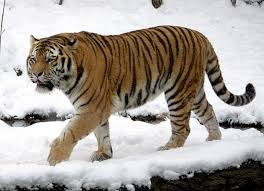

<!-- img : 그림 출력, 빈요소 -->




<br>
<br>
<br>
<br>

<hr> <br> <br> <br>

<a href="http://daum.net">
    
</a>
<!-- 고양이 그림 출력 -> 클릭하면 네이버 이동 -->
<a href="http://naver.com">
    
</a>

<br>

<!-- 강아지지 그림 출력, 클릭하면 github로 이동 -->
<a href="http://github.com">
    
</a>